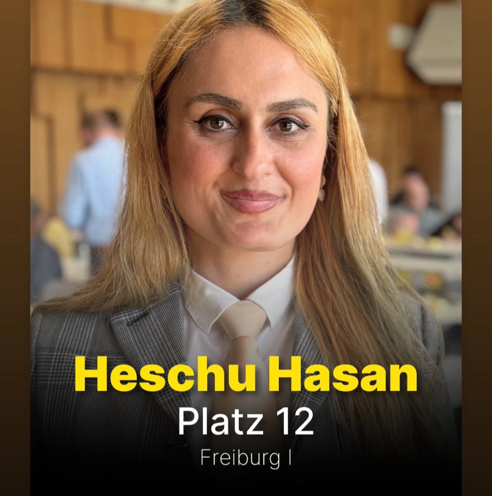

Viele Bürger:innen wissen genau, was sie wollen – aber sie stoßen auf eine Verwaltung, die mauert.
Ich meine Situationen, in denen Bürger:innen durch das Verhalten von Ämtern, Gerichten oder Polizei zur Ohnmacht gedrängt werden – durch Verzögerung, Ignoranz und Übermacht. Und wenn sie dann emotional reagieren, werden sie kriminalisiert.
Das ist nicht rechtsstaatlich. Das ist systematisch unfair.
- 🔹 Konsequenzen bei systematischer Behördenwillkür
- 🔹 Schutz vor ungerechtfertigter Kriminalisierung
- 🔹 Das Recht darf nicht an Fristen und Formularen scheitern
Besonders im Bereich Umwelt und Bildung wird sichtbar, wie oft Politik nicht daran scheitert, dass es keine Ideen gibt – sondern daran, dass das System diese Ideen blockiert.
- 🔸 Energiewende? Verzögert durch überlastete Verfahren.
- 🔸 Bildungsgerechtigkeit? Ausgebremst durch starre Strukturen.
Der Staat kann nicht von Respekt sprechen, wenn er selbst keinen zeigt. Wie soll ein Bürger friedlich bleiben, wenn er von oben herab behandelt wird? Der Staat muss Vorbild sein – sonst hat er kein Recht, etwas vom Bürger zu verlangen.
✉️ Kontakt per E-MailUmweltpolitik
Text zur Umweltpolitik...
Bildungspolitik
Text zur Bildungspolitik...
Biografie
Mein Name ist Heschu Hasan und ich bin studierte Wirtschaftswissenschaftlerin. Ich bin in der Autonomen Region Kurdistan geboren und in Deutschland aufgewachsen.
Wahlprogramm
Hier können Sie das vollständige Wahlprogramm der FDP als PDF herunterladen:
📄 Wahlprogramm der FDP herunterladen